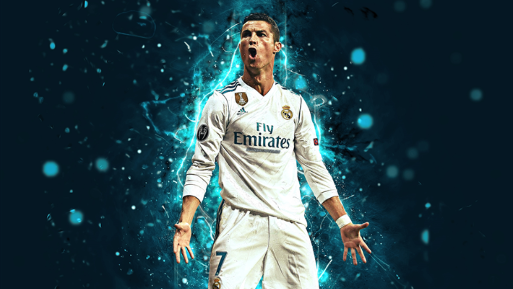

es aris cristano ronaldo
is ert erti sauketeso fexburtelia fexburtis istoriashi
mas yvelaze meti goli aqvs gatanili fexburtshi 902 goli
is gamoircheva dartymit driblingit sidzlierit da skillit aseve mas aqvs didi naxtomi
is me dzalian miyvars misi fexburtis tamashis yureba msiamovnebs
ronaldom kariera daiwyo sportingshi shemdeg gadavida 2005 wels manchester iunaitedshi
shemdeg gadavida 2009 wels real madridshi shemdeg gadavida 2018 iuventusshi
iuvedan gadavvida 2022 wels isev manchester iunaitedshi magram didi xani ar darcha
imitom rom mwvrtneltan kamati mouvida da shemdeg 2023 wlis decembershi gadavida al nasrshi
mas aqvs 5 ucl 1 euro 1 elit legue 3 premier legue 5 laliga 5 golden boots
3 fa cup 1 asia chemfions leguen 1 carabao cup 1 puskas award
5 golden ball 5 fifa greatest men 1 portugal legue
is daibada lisabonshi garib qalaqshi
is mushaobda nagvis mxvetavad da amis gamo maswavlebelma utxra rom araferi ar gamogivao
amis gamo ronaldo gabrazda da skami esrola maswavlebels amis gamo skolidan gaagdes
shemdeg roca sportingshi tamashobda mas tamashis dros ragac daemarta
eqimebma agmouchines gultan didi problememi ris gamoc sheidzleba momkvdariyo
magram mkurnaloba dzviri iyo da amis sashvaleba ar qondat mis ojaxs
misma mamam amitom mushaoba daiwyo mushaobda magram sakmarisi tanxa ver sheagrova
amis gamo mas daexmara misi gundi sportingi da agrovda tanxa
ronaldom rtuli operacia gadaitana da dabrunda gundshi
ronaldom gaaoca manchester iunaitedis mwvrtneli da maleve gadaiyvana mis gundshi ronaldo
is manchester iunaitedshi dzalian kargad tamashobda da 1 ucl 1 puskas awardi
aseve moigo 3 premiel liga da 3 fa cup iunaitedshi
dadga 2006 weli ronaldom misi gundi msoflio chempionatze naxevarfinalshi gaiyvana
is amdros 19 wlis iyo da dzalian kargi shedegebi dado
modi cota warssulshi davbrundet
2004 wlis euro am dros inglis daupirispirda portugalia
tamashi 1-1 damtavrda da penaltebamde mivida saqme
inglisis ertma motamashem aacila da ronaldom gadamwyveti goli sheagdo da tamashi moigo
magram sammwuxaro is iyo rom ronaldos mama gardaecvala shua tamasshi
davbrundet 2008 wels iunaitedi finalshi chelsea etamasheba ronaldom mag tamashi goli sheagdo
magram tamashi 1-1 dasrulda da daiwyo penaltebis seria ronaldo aacila penalti magram tamashi mainc moiges da chempionta ligis mflobeli gaxda
kargi gadavidet 2009 welze roca ronaldo gadavida madridis realshi
man tavidan 3 weli veraferi ver moigo 2013 wels man oqros burti moigo
2014 wels man moigo chempionta liga es iyo dzalian kargi finali
1-0 agebs madridis reali atletikostan
bolo kutxuria modrichma burti sajarimoshi chaawoda ramosi axta daartya da goli gaitana
mteli stadioni ingreva tamashi gadavida damatebit droshi
damatebit droshi beils 109 wutze tavit gaaqvs goli shemdeg ronaldo gaitana penalty chemdeg ki asensiom dzlieri dartymit
tamashi moiges 4-1 da ronaldo meore chempionta ligis gamarjvebuli gaxda
aseve 2014 wels moigo oqros burti

2015 wels samwuxarod araferi ar mougia
2016 wels chempionta ligis finalshi penaltebamde mivida saqme
amdros reali atletikos etamasheboda dziritadi dro 1-1 morcha
ertma atletikos motamashem aacila da ronaldom gadamwyveti penalti gaitana angarishi 5-4
stadioni daingra ronaldom 3 chempionta liga moigo
euro 2016is finaly safrangettan tamashis dawyebidanve datranves ronaldo
amis gamo gauwirdat portugalias tamashi magram angarishi ar icvleba 0-0
gadaviga damatebit droshi saqme ronaldo iyo rogorc mwvrtneli
da uceb 116 wutze nani shorimandzilidan urtyams da gaaqvs goli ingreva mteli stadioni
moigo ronaldom da portugaliam moigo euro
dadga 2017 weli isev ligis finali sadac reali daupirispirdasadac 3-1 moigo
aseve man moigo oqros burti am welsac da wina welsac
dadga 2018 weli reali isev ligis finalshi etamasheba iuventuss
am tamashi 4-1 gaanadgura iuve sadac ronaldom 2 goli gaitana
amis shemdeg ronaldom datova reali da gadavida iuveshi
iuvestan ertad 2 copa italia da 3 seria a moigo
axla ki gadavidet msoflio chempionatze pirveli tamashi espanettan qonda
espaneti udzlieresi gundia fexburtshi
daiwyo tamashi 4 wutze ronaldom aikida penalti da gaitana 1-0
shemdeg espanetis motamashem shori mandzilidan sheagdo 1-1
shemdeg ronaldo isev sajarimos garedan urtyams da gaaqvs goli 2-1
shemdeg cariel karshi gaitana espanelma fexburtelma 2-2
mere isev espanelma gaitana dzalian lamazi goli 2-3
bolo wutebia 88 wuti ronaldo mivida burttan da asrulebs sajarimo dartymas
ronaldo daartya da maxvil magal kutxeshi shevida burti
ronaldom am tamashze 3 goli gaotana da portugalias qula aagebina
mere gadavidet 2022 welze roca ronaldo gadavida iunaitedshi man mwvrtenls echxuba
magram man mainc gadamwyveti goli gaitana atalantastan ligaze bolo wutebshi
2023 wels gadavida al nasrshi sadac pirvelive wels sadac is iyo 38 wlis 56 goli gaitana msoflioshi yvelaze meti
axlac amzamad al nasrshi tamashobs mas 902 yvelaze meti goli aqvs gatanili
is aris goat
